Lesson 0 - Setting up hardware and software
Setting up hardware and software
Task 1 - Connect the microcontroller to the computer
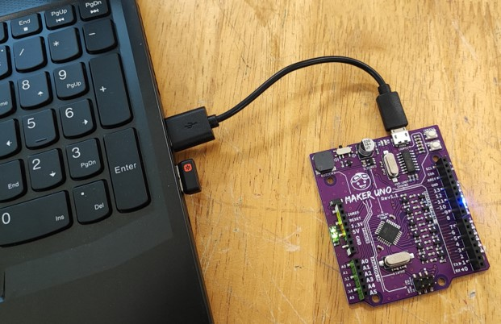
Task 2 - Download and install the coding environment
-
Go to mblock.makeblock.com/en-us/download/
-
Choose the suitable version for your operating system.
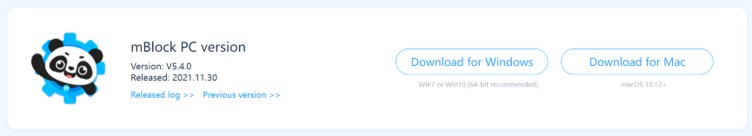
-
Download and install mBLock 5 into your computer.
-
Once you installed, launch mBlock 5 from the Start Menu or from your Desktop.
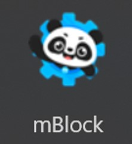
-
The user interface will look something like this 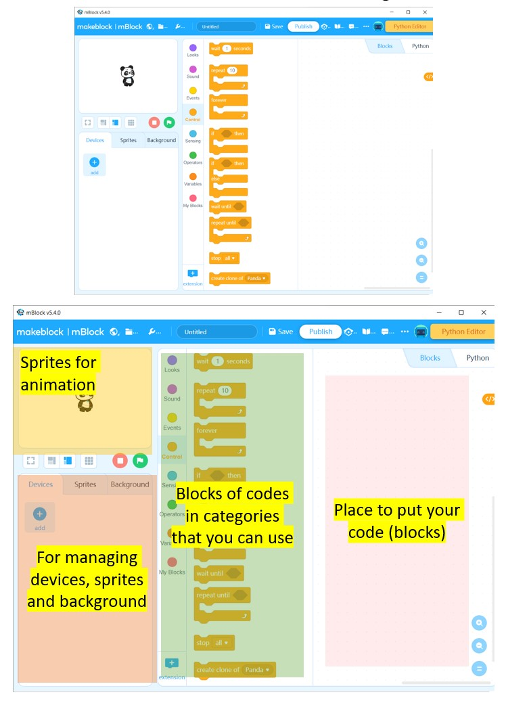
-
Let's add the Arduino UNO into the device section.
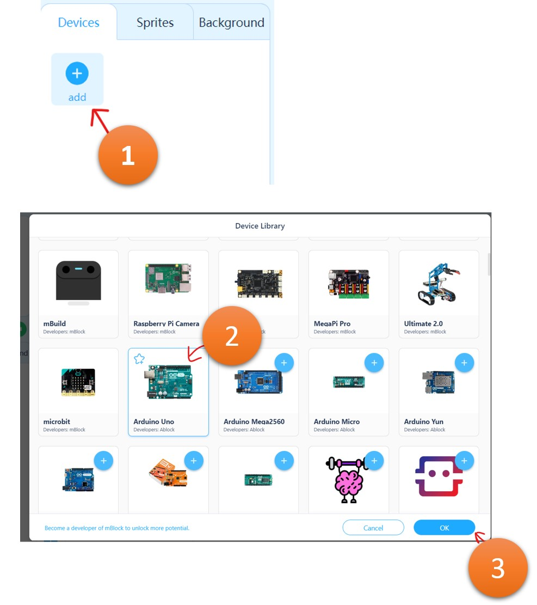
-
Make sure Arduino Uno device is selected in the devices section. Then click Connect
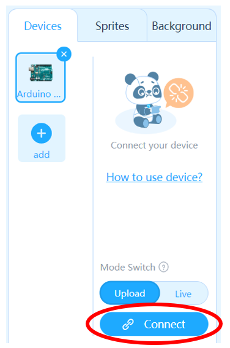
-
You will see this pop-up menu, if it shows "No device can be detected...", then check Show all connectable devices.
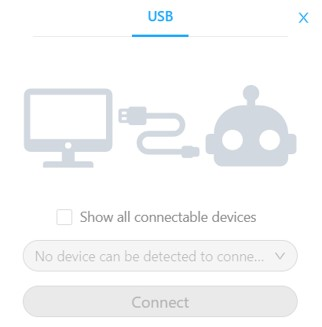 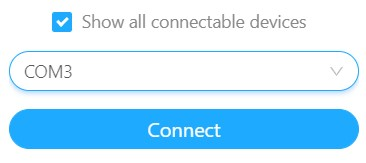
-
Select the right COM device and click Connect.
If you are unsure if that is the Maker Uno, disconnect all USB devices except the Maker Uno.
-
Your Devices section should look like this.
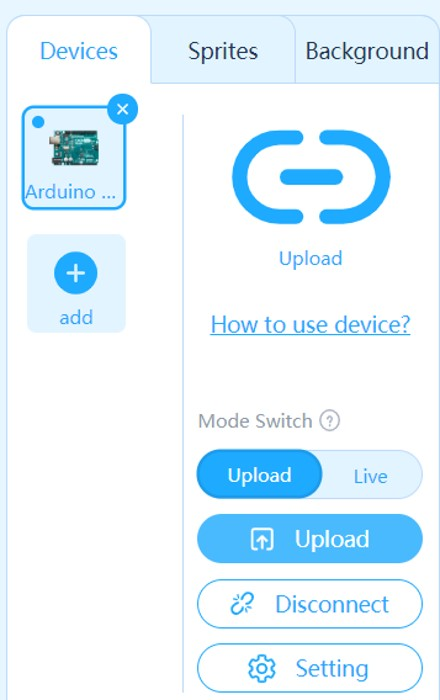
Task 3 - Switching between Live and Upload mode
-
In mBlock, there are two modes we use: Live mode and Upload mode.
-
Live: This is when your code runs right away on the device.
Remember to "Update Firmware" every time you switch to Live Mode.
-
Upload: Your code only runs when you click the
 button.
button.
-
-
You can change the mode through this Mode Switch toggle.
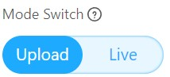
-
When switching to Live coding, you will have to "Update Firmware".
- Switch to Live mode
- Click Update Firmware
- Click Updates
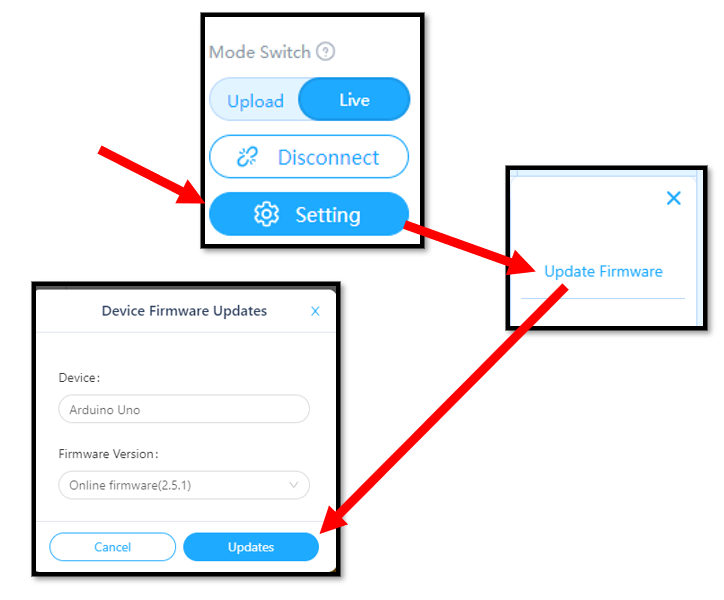
-
We will often switch between Live and Upload mode throughout this unit. Remember to "Update Firmware" every time we switch to Live mode.
End of Lesson 0 Assessment
Open the link below and login using your Microsoft account to do the Quiz.